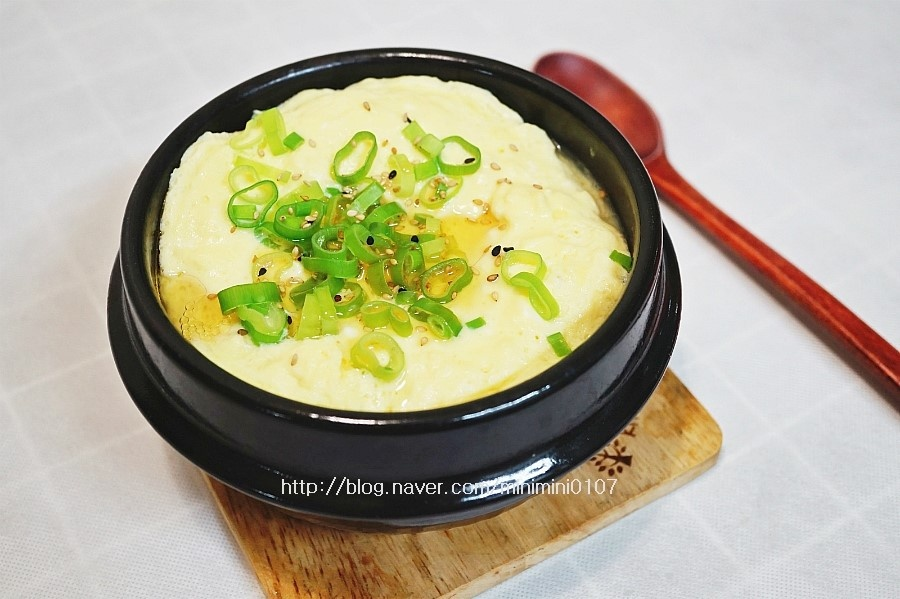

- 떡볶이
- 계란찜
- 짜장라면
계란찜

계란찜은 그 특유의 부드러움과 고소함으로 승부를 보는 음식이다.
그래서 지금부터 계란찜. 그 중에서도 뚝배기 계란찜을 만드는 방법을 알려주려고 한다.
재료
- 물1컵(종이컵기준)
- 계란2개
- 소금 0.25스푼
- 후추 적당히
소금은 사람입맛따라 양을 바꿔주면 된다.(참고로 나는 싱겁게 먹는 편이다.)
그릇에 계란 2개를 깨서 넣고, 충분히 섞어줍니다.(소금간도 해줍니다.)
뚝배기에 물을 넣고 끓을때까지 기다려줍니다.
물이 끓는다면 섞은계란을 붓고 잘 섞이도록 섞어줍니다.(끓는 동안에도 섞어줘야 밑부분이 타지 않아요.)
이렇게 몇분 끓이면 맛있는 계란찜이 만들어집니다.
이미지 출처 : 만개의 래시피